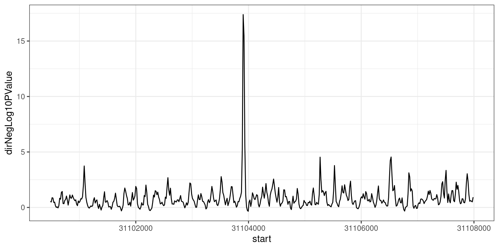
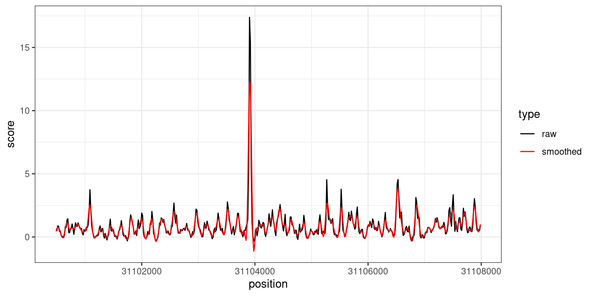

footprintR provides a flexible scanning framework, which can be used to partition the genome (or a subset thereof) into windows and calculate a custom score for each window. Optionally, neighboring windows with similar scores can then be merged into larger signal regions. In this chapter, we show some examples of how this framework can be used to scan the genome for various types of signals of interest.
The figure below illustrates the general idea of the scanning framework.
The first step is to define the windows and calculate some quantity of interest for each of them, using the quantifyWindowsInRegion function. Next, these quantities are passed to a score function, which summarizes the input data into a score for each window - this can, for example, perform a differential methylation analysis based on the counts of methylated and unmethylated nucleotides obtained from quantifyWindowsInRegion. Finally, the window scores are processed using processWindowScores. This function allows neighboring windows with similar scores to be merged into larger signal regions. The user can choose to either call the functions directly, or use the wrapper function scanForHighScoringRegions.
Thanks to the modularity, the scanning framework is flexible and can accommodate many different use cases by selecting a suitable quantification function, scoring function and aggregation of the scores. The table below lists some of the applications that can be accommodated with the functions that are provided within footprintR. However, the user can also define their own functions for specific use cases.
The first use case involves scanning for differentially methylated regions (DMRs) between two conditions, based on 6mA data. In our case, we will compare wild-type mouse ES cells to ‘TKO’ mouse ES cells where the three DNA methyltransferases (Dnmts) have been knocked out. For time reasons, we limit the scanning to chromosome 19 - the most efficient way of performing a genome-wide analysis is typically to parallelize over chromosomes (e.g. by replacing the lapply call in the code below by a parallelized version).
We tile the genome into 30bp windows (windowSize), shifted successively by 15bp (windowStep) to achieve a high resolution and minimize the risk of splitting a region of interest in the middle (thereby potentially losing the signal). We then use the sumNmodNvalid function to count the number of modified As for each window, as well as the total number of As. The classification of nucleotides is obtained by thresholding the modification probability using the modProbThreshold value (0.5). Given the modified and total count for each sample, we next use the getDifferentiallyModifiedWindows score function to perform the differential methylation analysis for each window. This will return several statistics, including the dirNegLog10PValue, which is obtained by calculating -log10(p-value) and multiplying with the sign of the log-fold change. We will use this statistic (scoreCol) as the input for the final processing of the windows. Briefly, the statistics will be smoothed over neighboring windows (the degree of smoothing is controlled by the minperiod argument) and subsequently thresholded (thresh argument). Neighboring windows where the statistic exceeds this threshold will be fused into a larger region of interest, unless they are separated by more than 50 nucleotides (maxGap).
6.1.1 Choosing suitable values for thresholds and smoothing parameters
In the example above, we smooth the window scores and fuse neighboring windows with smoothed scores above a certain threshold (3). The parameters for this step of the analysis were determined by inspecting the intermediate results obtained from applying the quantification and scoring functions independently to a small region of the genome. Here we illustrate how this can be done, using a 5MB region on chromosome 19. First, we call the quantifyWindowsInRegion function, with sumNmodNvalid as the quantFunction, to get the total and modified nucleotide and the fraction of modified nucleotides for each window. The windows will be automatically defined within the specified region, given the indicated window size and step.
Show/hide code
# define the small regionregSmall <-"chr19:31000000-36000000"# define windows in the small region and quantify data in windowsse <-quantifyWindowsInRegion(bamfiles = bamfiles,region = regSmall,modbase ="a",modProbThreshold =0.5,sampleAnnot = sampleAnnot,seqinfo =seqinfo(gnm),sequenceContextWidth =1,sequenceReference = gnm,sequenceContext ="A",windowMode ="fixed",windowSize =30,windowStep =15,quantFunction ="sumNmodNvalid",BPPARAM = bpParam,verbose =interactive())
The output of quantifyWindowsInRegion is a SummarizedExperiment object, with assays for the Nmod, Nvalid and FracMod values for each window in each sample.
Next, we apply the score function (getDifferentiallyModifiedWindows) to perform the differential methylation analysis for each window.
Show/hide code
gr <-getDifferentiallyModifiedWindows(se, verbose =interactive())
This function (as all other score functions compatible with the footprintR scanning framework) returns a GRanges object containing the windows, with scores as metadata columns.
At this point, we can either keep the results on the individual window level, or attempt to fuse neighboring windows with high scores, using the processWindowScores function. We will illustrate the latter using the dirNegLog10PValue as the score column. First, we plot the estimates of this score along the genomic region (just a small part of it, for visibility).
Show/hide code
ggplot(as.data.frame(gr[6700:7200]), aes(x = start, y = dirNegLog10PValue)) +geom_line() +theme_bw()

Figure 6.4
To determine suitable smoothing parameters, we can call the processWindow with scoreAction = "smooth".
This replaces the dirNegLog10PValue column with a smoothed version, which we can see by plotting it overlaid on the unsmoothed values.
Show/hide code
plotdf <-data.frame(position =start(gr[6700:7200]), raw = gr$dirNegLog10PValue[6700:7200],smoothed = grsmooth$dirNegLog10PValue[6700:7200]) |>pivot_longer(names_to ="type", values_to ="score", -position)ggplot(plotdf, aes(x = position, y = score, color = type)) +geom_line() +scale_color_manual(values =c(raw ="black", smoothed ="red")) +theme_bw()

Figure 6.5
Based on these values, we can now also decide on a suitable value for the threshold parameter, which will be applied to the smoothed values to determine which windows show a strong signal.
6.2 Genome-wide estimation of CpG methylation levels (within samples)
In the example above, the scores were calculated over windows of different size. By setting the window size to 1, we can also calculate single nucleotide-level scores. Here, as an example, we illustrate how to estimate the global distribution of methylation levels across all CpGs in the genome. For time reasons, as above we only consider chromosome 19 here.
In this case, we again use sumNmodNvalid as the quantFunction, as it provides an estimate of the fraction modified bases for each window (in this case, since the window size is 1, for each modified base). We use getRangesWithAssayValues as the scoreFunction, which will move the calculated values from the FracMod and Nvalid assays to the metadata columns of the nucleotide-level GRanges object. By setting scoreAction to “pass”, we instruct the scanning framework to not process the nucleotide-level scores further, but simply return the GRanges object with the added metadata columns. Finally, by setting the sequenceContext to “NCG”, we make sure to only retain positions where the genomic sequence is CG.
As mentioned above, the individual functions called by scanForHighScoringRegions can also be used independently. This can be helpful in different settings - as already shown, it is helpful in order to determine suitable parameters and thresholds for the smoothing and fusing of windows. Another situation when it is useful is when the windows are predefined rather than obtained by tiling the genome into equally sized bins. To illustrate this use case, here we will use the quantifyWindowsInRegion function, together with the phasingScoreFourierquantFunction to annotate a set of CTCF sites with a score quantifying the degree of nucleosome phasing estimated from the average 6mA signal across reads in the region around the motif. This function calculates a phasing score for each window by decomposing the FracMod values into frequency components and extracting the amplitude of the component corresponding to a period consistent with the average nucleosome distance. Note that we set windowMode to "predefined", and define the desired windows via the windows argument. In addition, we use larger windows than above (760bp), to have enough data to be able to detect periodic patterns.
# Scanning the genome for regions of interest {#sec-scanning}[fmicompbio/footprintR]{.githubpkg} provides a flexible scanning framework, which can be used to partition the genome (or a subset thereof) into windows and calculate a custom score for each window. Optionally, neighboring windows with similar scores can then be merged into larger signal regions. In this chapter, we show some examples of how this framework can be used to scan the genome for various types of signals of interest.The figure below illustrates the general idea of the scanning framework.{#fig-scan-framework .lightbox fig-alt="Schematic of the footprintR genome scanning framework." height=600}The first step is to define the windows and calculate some quantity of interest for each of them, using the [quantifyWindowsInRegion]{.fn} function.Next, these quantities are passed to a _score function_, which summarizes the input data into a score for each window - this can, for example, perform a differential methylation analysis based on the counts of methylated and unmethylated nucleotides obtained from [quantifyWindowsInRegion]{.fn}.Finally, the window scores are processed using [processWindowScores]{.fn}. This function allows neighboring windows with similar scores to be merged into larger signal regions. The user can choose to either call the functions directly, or use the wrapper function [scanForHighScoringRegions]{.fn}.Thanks to the modularity, the scanning framework is flexible and can accommodate many different use cases by selecting a suitable quantification function, scoring function and aggregation of the scores. The table below lists some of the applications that can be accommodated with the functions that are provided within [fmicompbio/footprintR]{.githubpkg}. However, the user can also define their own functions for specific use cases.{#fig-scan-usecases .lightbox fig-alt="Table of use cases that can be addressed using the genome scanning framework in footprintR." height=300}Below we will show several examples of using the scanning framework for different purposes. ```{r}#| message: false#| label: load-packagesBSgenomeName <-"BSgenome.Mmusculus.GENCODE.GRCm39.gencodeM34"library(footprintR)library(ggplot2)library(BSgenomeName, character.only =TRUE)library(BiocParallel)library(stringr)library(Hmisc)library(SummarizedExperiment)library(patchwork)library(dplyr)library(tidyr)library(parallel)# Load genomegnm <-get(BSgenomeName)genome(gnm) <-"mm39"# Define parallelization backendbpParam <-MulticoreParam(workers =24L, RNGseed =42L)```## Genome-wide DMR scanning (between samples)The first use case involves scanning for differentially methylated regions (DMRs) between two conditions, based on 6mA data.In our case, we will compare wild-type mouse ES cells to 'TKO' mouse ES cells where the three DNA methyltransferases (Dnmts) have been knocked out.For time reasons, we limit the scanning to chromosome 19 - the most efficient way of performing a genome-wide analysis is typically to parallelize over chromosomes (e.g. by replacing the `lapply` call in the code below by a parallelized version).We tile the genome into 30bp windows (`windowSize`), shifted successively by 15bp (`windowStep`) to achieve a high resolution and minimize the risk of splitting a region of interest in the middle (thereby potentially losing the signal). We then use the [sumNmodNvalid]{.fn} function to count the number of modified As for each window, as well as the total number of As.The classification of nucleotides is obtained by thresholding the modification probability using the `modProbThreshold` value (0.5).Given the modified and total count for each sample, we next use the [getDifferentiallyModifiedWindows]{.fn} score function to perform the differential methylation analysis for each window. This will return several statistics, including the `dirNegLog10PValue`, which is obtained by calculating `-log10(p-value)` and multiplying with the sign of the log-fold change. We will use this statistic (`scoreCol`) as the input for the final processing of the windows.Briefly, the statistics will be smoothed over neighboring windows (the degree of smoothing is controlled by the `minperiod` argument) and subsequently thresholded (`thresh` argument).Neighboring windows where the statistic exceeds this threshold will be fused into a larger region of interest, unless they are separated by more than 50 nucleotides (`maxGap`). ```{r}#| label: define-bamfiles# define bam files to includebamfiles <-c("data/mESC_wt_6mA_rep1.bam", "data/mESC_wt_6mA_rep2.bam","data/mESC_TKO_6mA_rep1.bam", "data/mESC_TKO_6mA_rep2.bam")names(bamfiles) <-sub("\\.bam", "", basename(bamfiles))# define sample annotation tablesampleAnnot <-data.frame(sample =names(bamfiles),group =factor(str_extract(names(bamfiles), "wt|TKO"), levels =c("wt", "TKO")))``````{r}#| eval: !expr isTRUE(exists("params") && is.list(params) && isTRUE(params$recompute))#| label: run-dmr-scanning# run scanning of chromosome 19chrlens <-seqlengths(gnm)["chr19"]dmrL <-lapply(seq_along(chrlens), function(i) {scanForHighScoringRegions(bamfiles = bamfiles,sampleAnnot = sampleAnnot,chromosomeLengths = chrlens[i],quantFunction ="sumNmodNvalid",scoreFunction ="getDifferentiallyModifiedWindows",modbase ="a",modProbThreshold =0.5,tileSize =2e+06,seqinfo =seqinfo(gnm),sequenceContextWidth =1,sequenceReference = gnm,sequenceContext ="A",windowMode ="fixed",windowSize =30,windowStep =15,scoreCol ="dirNegLog10PValue",scoreAction ="smoothFuse",thresh =3,minperiod =3,maxGap =50,BPPARAM = bpParam,verbose =interactive())})``````{r}#| eval: !expr isTRUE(exists("params") && is.list(params) && isTRUE(params$recompute))#| echo: false#| label: save-dmr-scanningif (!file.exists("data/out")) {dir.create("data/out", recursive =TRUE)}saveRDS(dmrL, "data/out/scanning_dmr-list.rds")``````{r}#| echo: false#| label: load-dmr-scanningdmrL <-readRDS("data/out/scanning_dmr-list.rds")```Each element of the resulting list (in this case, there is only one) contains the inferred DMRs for one chromosome.```{r}#| label: explore-dmr-scanninglength(dmrL[[1]])head(dmrL[[1]])table(dmrL[[1]]$direction)```We can visualize one of the top hits using [plotRegion]{.fn}.```{r}#| fig.height: 10#| label: fig-top-dmr-scanningreg <- dmrL[[1]][which.max(abs(dmrL[[1]]$dirNegLog10PValue))]se <-readModBam(bamfiles = bamfiles, sampleAnnot = sampleAnnot, regions = reg +500, modbase ="a", seqinfo =seqinfo(gnm), sequenceContextWidth =1, sequenceReference = gnm, trim =TRUE, verbose =interactive())se <-flattenReadLevelAssay(se)plotRegion(se, region = reg +500, sequenceContext ="A", tracks =list(list(trackData ="mod_prob", trackType ="Heatmap",interpolate =TRUE),list(trackData ="FracMod", trackType ="Smooth",colorBy ="group", highlightRegions = reg))) +plot_layout(heights =c(3, 1))```### Choosing suitable values for thresholds and smoothing parametersIn the example above, we smooth the window scores and fuse neighboring windows with smoothed scores above a certain threshold (3).The parameters for this step of the analysis were determined by inspecting the intermediate results obtained from applying the quantification and scoring functions independently to a small region of the genome.Here we illustrate how this can be done, using a 5MB region on chromosome 19.First, we call the [quantifyWindowsInRegion]{.fn} function, with [sumNmodNvalid]{.fn} as the _quantFunction_, to get the total and modified nucleotide and the fraction of modified nucleotides for each window.The windows will be automatically defined within the specified `region`, given the indicated window size and step. ```{r}#| label: quantify-windows-for-dmr# define the small regionregSmall <-"chr19:31000000-36000000"# define windows in the small region and quantify data in windowsse <-quantifyWindowsInRegion(bamfiles = bamfiles,region = regSmall,modbase ="a",modProbThreshold =0.5,sampleAnnot = sampleAnnot,seqinfo =seqinfo(gnm),sequenceContextWidth =1,sequenceReference = gnm,sequenceContext ="A",windowMode ="fixed",windowSize =30,windowStep =15,quantFunction ="sumNmodNvalid",BPPARAM = bpParam,verbose =interactive())```The output of [quantifyWindowsInRegion]{.fn} is a `SummarizedExperiment` object, with assays for the `Nmod`, `Nvalid` and `FracMod` values for each window in each sample. ```{r}#| label: show-sese```Next, we apply the score function ([getDifferentiallyModifiedWindows]{.fn}) to perform the differential methylation analysis for each window.```{r}#| label: get-dmwsgr <-getDifferentiallyModifiedWindows(se, verbose =interactive())```This function (as all other score functions compatible with the [fmicompbio/footprintR]{.githubpkg} scanning framework) returns a `GRanges` object containing the windows, with scores as metadata columns. ```{r}#| label: show-dmwsgr```At this point, we can either keep the results on the individual window level, or attempt to fuse neighboring windows with high scores, using the [processWindowScores]{.fn} function.We will illustrate the latter using the `dirNegLog10PValue` as the score column. First, we plot the estimates of this score along the genomic region (just a small part of it, for visibility). ```{r}#| fig.width: 8#| fig.height: 4#| label: fig-raw-scores-dmwggplot(as.data.frame(gr[6700:7200]), aes(x = start, y = dirNegLog10PValue)) +geom_line() +theme_bw()```To determine suitable smoothing parameters, we can call the [processWindow]{.fn} with `scoreAction = "smooth"`.```{r}#| label: smooth-scores-dmw(grsmooth <-processWindowScores(gr, scoreCol ="dirNegLog10PValue", scoreAction ="smooth", minperiod =3))```This replaces the `dirNegLog10PValue` column with a smoothed version, which we can see by plotting it overlaid on the unsmoothed values. ```{r}#| fig.width: 8#| fig.height: 4#| label: fig-smooth-scores-dmwplotdf <-data.frame(position =start(gr[6700:7200]), raw = gr$dirNegLog10PValue[6700:7200],smoothed = grsmooth$dirNegLog10PValue[6700:7200]) |>pivot_longer(names_to ="type", values_to ="score", -position)ggplot(plotdf, aes(x = position, y = score, color = type)) +geom_line() +scale_color_manual(values =c(raw ="black", smoothed ="red")) +theme_bw()```Based on these values, we can now also decide on a suitable value for the `threshold` parameter, which will be applied to the smoothed values to determine which windows show a strong signal. ## Genome-wide estimation of CpG methylation levels (within samples)In the example above, the scores were calculated over windows of different size. By setting the window size to 1, we can also calculate single nucleotide-level scores. Here, as an example, we illustrate how to estimate the global distribution of methylation levels across all CpGs in the genome. For time reasons, as above we only consider chromosome 19 here. In this case, we again use [sumNmodNvalid]{.fn} as the `quantFunction`, as it provides an estimate of the fraction modified bases for each window (in this case, since the window size is 1, for each modified base). We use [getRangesWithAssayValues]{.fn} as the `scoreFunction`, which will move the calculated values from the `FracMod` and `Nvalid` assays to the metadata columns of the nucleotide-level `GRanges` object. By setting `scoreAction` to "pass", we instruct the scanning framework to not process the nucleotide-level scores further, but simply return the `GRanges` object with the added metadata columns. Finally, by setting the `sequenceContext` to "NCG", we make sure to only retain positions where the genomic sequence is CG. ```{r}#| label: run-cpg-methylation-scanning# Define the bam file to use and generate sample annotation tablebamfiles <-c(wt2 ="data/mESC_wt_5mCG_5hmCG_rep2.bam")sampleAnnot <-data.frame(sample =names(bamfiles))# Run scanningchrlens <-seqlengths(gnm)["chr19"]rescpgL <-lapply(seq_along(chrlens), function(i) {scanForHighScoringRegions(bamfiles = bamfiles,sampleAnnot = sampleAnnot,chromosomeLengths = chrlens[i],quantFunction ="sumNmodNvalid",quantFunctionArgs =list(),scoreFunction ="getRangesWithAssayValues",scoreFunctionArgs =list(assayName =c("FracMod", "Nvalid")),modbase ="m",modProbThreshold =0.5,tileSize =1e6,seqinfo =seqinfo(gnm),sequenceContextWidth =3,sequenceReference = gnm,sequenceContext ="NCG",windowMode ="fixed",windowSize =1,windowStep =1,scoreCol =paste0("FracMod.", names(bamfiles)[1]),scoreAction ="pass",BPPARAM = bpParam,verbose =FALSE )})```Next, we plot the distribution of modification fractions. ```{r}#| label: fig-cpg-methylation-scanningplotdf <-as.data.frame(unname(rescpgL[[1]])) |> tidyr::pivot_longer(cols =-c(seqnames, start, end, width, strand), names_to =c(".value", "sample"),names_pattern ='(FracMod|Nvalid)\\.(.*)') |> dplyr::mutate(FracModBin = Hmisc::cut2(FracMod,cuts =seq(0, 1, by =0.1)))head(plotdf)ggplot(plotdf, aes(x = FracModBin)) +geom_bar() +labs(title ="All CpGs", x ="FracMod (binned)") +theme_bw() +theme(axis.text.y =element_text(size =12),axis.text.x =element_text(size =12, angle =45, hjust =1),axis.title =element_text(size =14))```## Annotation of predefined windowsAs mentioned above, the individual functions called by [scanForHighScoringRegions]{.fn} can also be used independently. This can be helpful in different settings - as already shown, it is helpful in order to determine suitable parameters and thresholds for the smoothing and fusing of windows. Another situation when it is useful is when the windows are predefined rather than obtained by tiling the genome into equally sized bins. To illustrate this use case, here we will use the [quantifyWindowsInRegion]{.fn} function, together with the [phasingScoreFourier]{.fn} _quantFunction_ to annotate a set of CTCF sites with a score quantifying the degree of nucleosome phasing estimated from the average 6mA signal across reads in the region around the motif.This function calculates a phasing score for each window by decomposing the `FracMod` values into frequency components and extracting the amplitude of the component corresponding to a period consistent with the average nucleosome distance.Note that we set `windowMode` to `"predefined"`, and define the desired windows via the `windows` argument. In addition, we use larger windows than above (760bp), to have enough data to be able to detect periodic patterns. ```{r}#| label: add-phasing-scoresbamfiles <-c("data/mESC_wt_6mA_rep1.bam")names(bamfiles) <-sub("\\.bam", "", basename(bamfiles))sampleAnnot <-data.frame(sample =names(bamfiles), group ="wt")period <-190windowSize <-4* periodnumCoef <-5(ctcf_sites <-readRDS("data/ctcf_sites_1000.rds"))ctcf_sites <-resize(ctcf_sites, width = windowSize, fix ="center")ctcf_sites <-unstrand(ctcf_sites)se <-readModBam(bamfiles = bamfiles, sampleAnnot = sampleAnnot, regions = ctcf_sites, modbase ="a", seqinfo =seqinfo(gnm), sequenceContextWidth =1, sequenceReference = gnm, trim =TRUE, verbose =interactive())se <-flattenReadLevelAssay(se)ctcf_sites$phasing_scores <-unlist(parallel::mclapply(seq_along(ctcf_sites),function(i) { tmp <-phasingScoreFourier(se =subsetByOverlaps(se, ctcf_sites[i]),gr = ctcf_sites[i], numCoef = numCoef)if (nrow(tmp) >0) { phasingscores <-assay(tmp, "phasingScoreAbs")[1, ] } else { phasingscores <-NA }# average across samples (in this case only one sample is used)mean(phasingscores, na.rm =TRUE) }, mc.cores = BiocParallel::bpnworkers(bpParam)))```## Session info<details><summary><b>Click to view session info</b></summary>```{r}#| label: session-infosessioninfo::session_info(info ="packages")```</details>
{kind=link}
{kind=link}